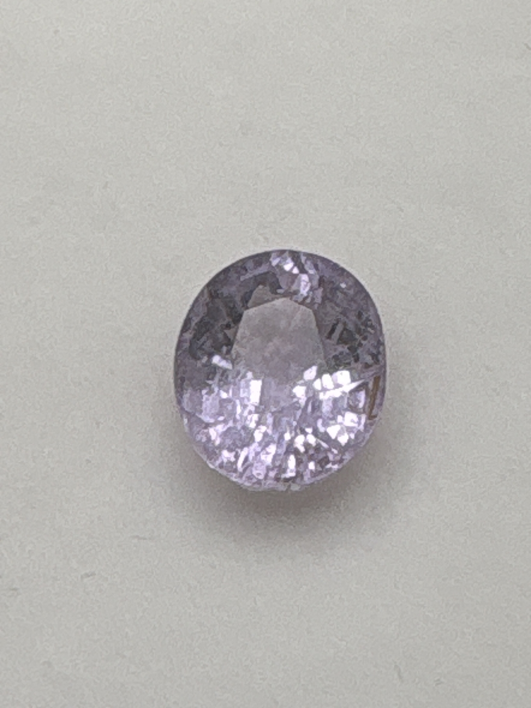

The Gem Drawer › No. 112

Labeled copper-bearing tourmaline but lavender-pink, a color copper cannot produce.
| Catalogue no. | #112 |
|---|---|
| As labeled | Labeled "Cuprian Elbaite" (= Paraiba-type copper-bearing tourmaline) - CAUTION: color is pale lavender/lilac-pink, completely outside the blue-green range this variety should show - verify before listing - see notes |
| Shape / cut | Oval |
| Weight | Not recorded |
| Measurements | Not recorded |
| Colour | Pale lavender / lilac-pink (as photographed - not a color copper coloration produces) |
| Clarity / condition | Not recorded |
Interested in this stone, or in the collection as a whole? Terry VanWormer can answer questions about it.
Click here to inquireor email Terry directly at maxrebo34@gmail.com